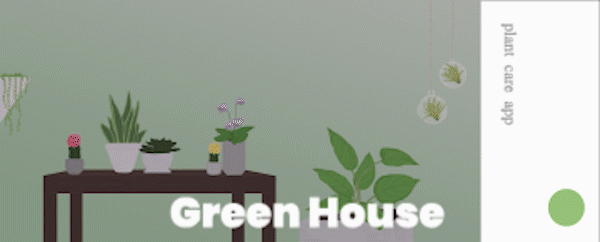

This microinteraction will be for my portfolio website, MG Design
The projects page is made up of project cards that currently look like this
There are no microinteractions incorporated into this page
The microinteraction I will be adding will function similarly to the example

The microinteraction will be triggered by hovering over the image card
The cirlce will expand to cover about 1/3 of the card
The subtitle will change color to white
The card imagewill decrease in saturation
The arrow will change in opacity from 0 to 100
The title, subtitle, and arrow are positioned above the circle
The user will see the card they are hovering over change, with the circle growing, saturation decreasing, subtitle color changing, and arrow appearing
There are no loops in this microinteraction
This microaction utilizes no modes